초소형 위성 영상처리 전 과정 — 복사보정 · 기하보정 · 품질분석End-to-End CubeSat Image Processing — Radiometric, Geometric, Quality
자사 초소형 위성의 원시 패킷을 영상으로 만들고, 물리량으로 보정하고, 지도에 앉히는 전 과정을 다뤘음. 남이 만든 산출물이 아니라 센서 자체를 상대한 유일한 작업임.Took our own CubeSat from raw downlink packets to a calibrated, map-registered image — radiometry, geometry, sharpness and pointing. The one project where I worked on the sensor itself rather than somebody else's product.
배경 · 목표Background
- 자사가 운용하는 초소형 위성의 L1A 데이터 품질을 검증하고, 원시 데이터에서 영상까지 가는 경로를 자동화해야 함.
- 복사보정 없이는 시점 간·밴드 간 비교가 불가능하고, 기하보정 없이는 다른 레이어와 겹칠 수 없음. 둘 다 없으면 영상이 아니라 그림일 뿐임.
- 포인팅 오차, PRNU(픽셀 비균일성), MTF(선명도) 같은 센서 품질 이슈를 수치로 확인해야 함.
- The L1A data quality of our in-house CubeSat needed verification, and the path from raw data to imagery needed automating.
- Without radiometric correction you cannot compare across dates or bands; without geometric correction you cannot overlay anything. Missing both, it is a picture rather than an image.
- Sensor quality — pointing error, PRNU, MTF — had to be quantified rather than described.
방법Method
- L0 → L1A: 원시 바이너리 패킷을 읽어 DN 영상으로 복원하고, 암전류·PRNU 보정 후 복사휘도로 변환함. 배치 쉘로 장면 단위 자동 처리.
- 복사휘도 → TOA 반사도: 태양천정각·일-지 거리·Thuillier 태양 복사조도 스펙트럼을 적용함.
- 대리보정(vicarious calibration): 프랑스 라크로(La Crau) 검보정장의 RadCalNet 지상 관측과 대조해 밴드별 이득을 유도함. 지상 분광 TOA 를 위성 분광응답함수(SRF)로 적분해 같은 기준에서 비교하는 방식.
- Sentinel-2 MSI 와 교차보정 — 동시 관측 장면을 대조해 이득·오프셋을 독립적으로 확인함.
- 기하보정 V3: 기준영상과 특징점 정합 → 이상점 제거 → RPC 적합 → 스트립 정렬. 처리 상태를 보는 웹 UI 와 도커 구성까지 포함.
- MTF: 에지법으로 선명도를 측정하고, 추정한 커널로 디블러링을 적용함.
- 포인팅 오차: 제조사 궤도·자세 메타데이터와 실측 오차를 매칭해 상관분석함. 표본이 작아(65건, 텔레메트리 27건) Pearson·Spearman·Kendall 세 계수를 함께 봤다 — n이 20대일 때는 Kendall 의 p-value 가 더 믿을 만함.
- L0 to L1A: decode raw binary packets into DN imagery, correct dark current and PRNU, convert to radiance. Scene-level batch automation in shell.
- Radiance to TOA reflectance using solar zenith angle, Earth-Sun distance and the Thuillier solar irradiance spectrum.
- Vicarious calibration against RadCalNet ground measurements at the La Crau site in France, deriving per-band gain. Ground spectra are integrated through the satellite's spectral response functions so both sides are compared on the same basis.
- Cross-calibration against Sentinel-2 MSI using coincident acquisitions, as an independent check on gain and offset.
- Geometric correction V3: feature matching against a reference image, outlier rejection, RPC fitting, strip alignment — with a web UI and docker setup for monitoring runs.
- MTF measured by the edge method, with the estimated kernel used for deblurring.
- Pointing error: matched measured error against the manufacturer's orbit and attitude metadata. With a small sample (65 scenes, 27 with telemetry) I read Pearson, Spearman and Kendall together — at n around 27, Kendall's p-value is the more trustworthy one.
결과Results
- 원시 바이너리에서 RGB 까지 원스텝 전처리 파이프라인 완성
- 라크로 검보정장 대리보정: 밴드별 TOA 반사도 비 평균 0.993 (1.0 이 완전 일치)
- 기하보정 V3 — 정합점 1,000여 개에서 RPC 적합, 평면위치오차 분포와 자가적합 잔차로 정확도 정량화
- 포인팅 오차: 경과일(시간 드리프트)만이 along·across·total 모든 오차와 유의한 상관 (along r=0.586, p<0.0001, n=65)
- across 오차는 Tilt(roll)과 음의 상관 (r=−0.322, p=0.0089) — 자세 제어의 영향
- 텔레메트리 27건에서 GNSS–TLE 고도차 |Δalt| 가 along·total 오차와 상관 (r=0.534 / 0.552)
- 이상치 그룹과 정상 그룹 사이에 통계적으로 유의한 파라미터 차이는 없음 — 단일 원인으로 설명되지 않는다는 결론
- 응용으로 확장: AOD 산출(MODIS MAIAC 대비 N=538, Bias +0.007, RMSE 0.033, R 0.683), 연무 제거, 해색 적조 탐지, 초해상화
- A one-step pipeline from raw binary to RGB.
- Vicarious calibration at La Crau: per-band TOA reflectance ratio averaging 0.993, where 1.0 is exact agreement.
- Geometric correction V3: RPC fitted from roughly a thousand tie points, with accuracy quantified through planimetric error distribution and self-fit residuals.
- Pointing: elapsed time is the only variable significantly correlated with all three error components (along r=0.586, p<0.0001, n=65).
- Across-track error correlates negatively with tilt/roll (r=−0.322, p=0.0089), pointing at attitude control.
- In the 27 telemetry scenes, GNSS–TLE altitude mismatch correlates with along and total error (r=0.534 / 0.552).
- No statistically significant parameter difference between outlier and normal groups — the outliers are not explained by a single cause.
- Extended downstream: AOD retrieval (N=538 against MODIS MAIAC, bias +0.007, RMSE 0.033, R 0.683), dehazing, ocean-colour HAB detection, super-resolution.
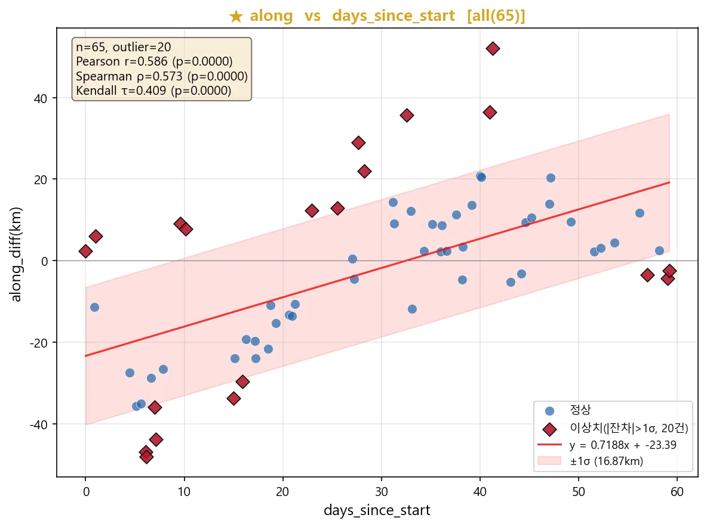
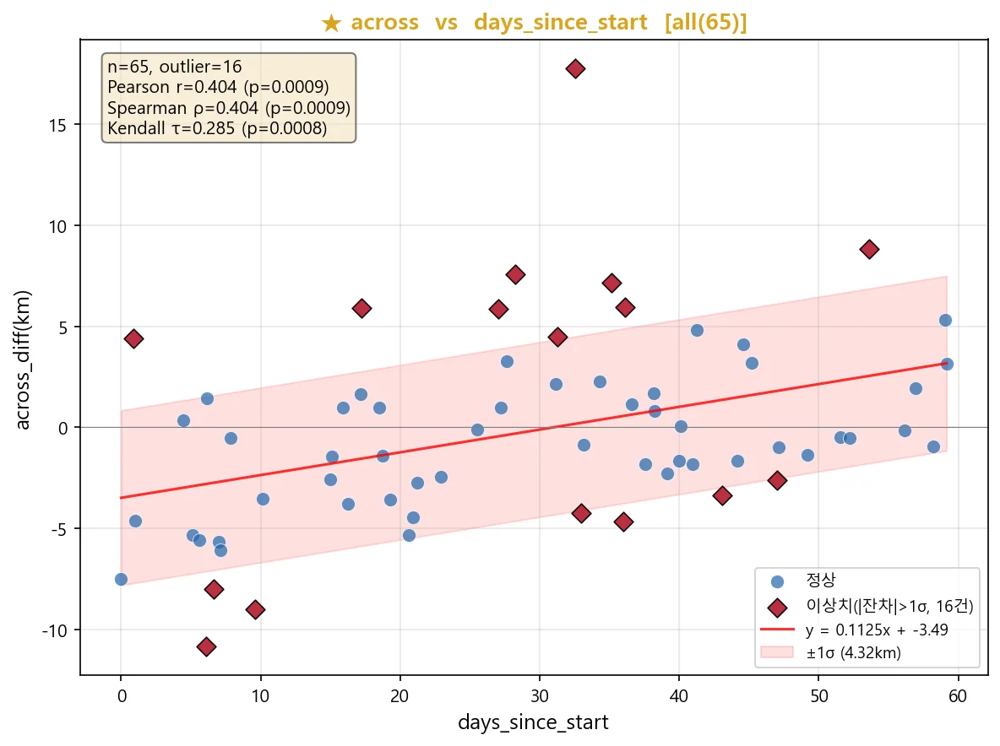
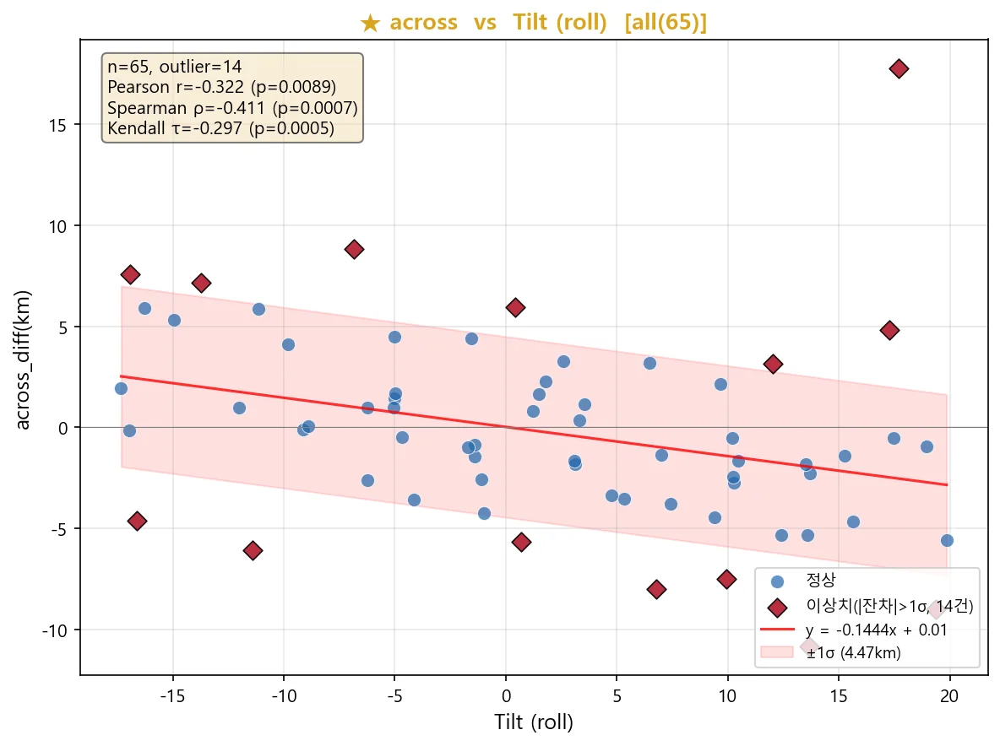
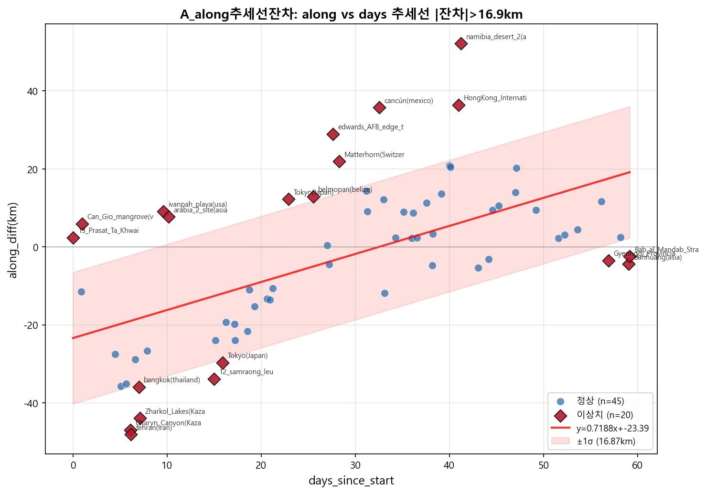
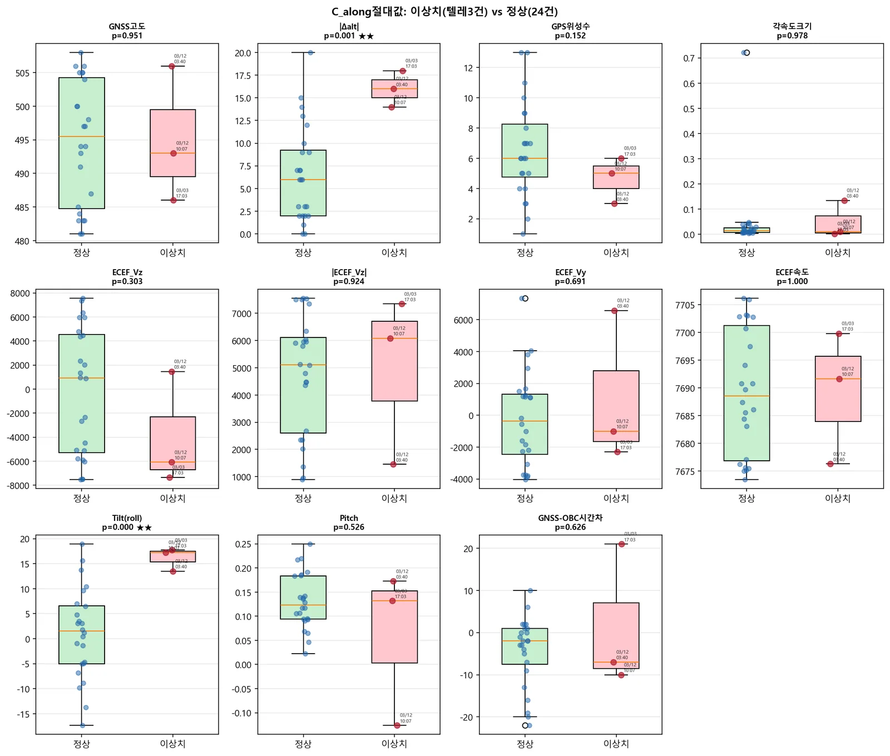
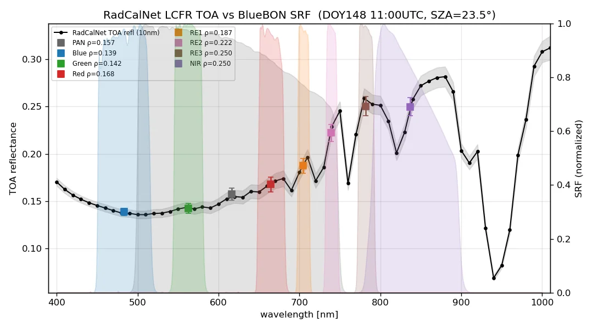
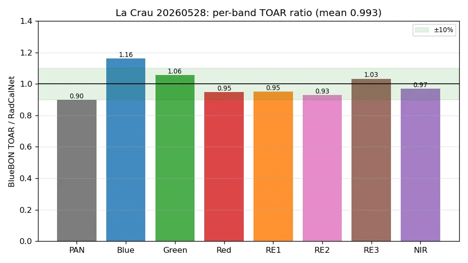
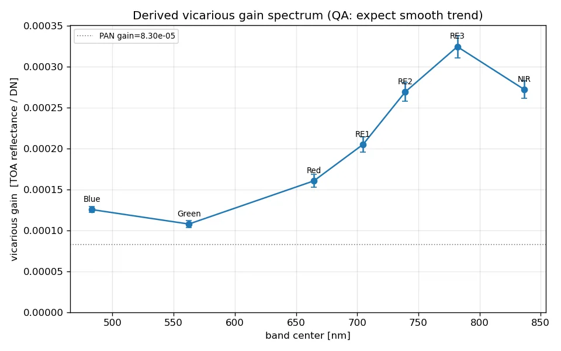
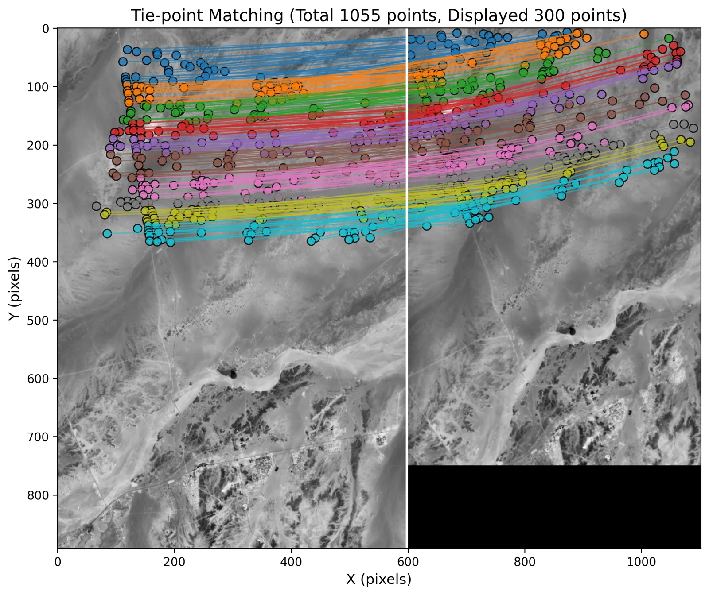
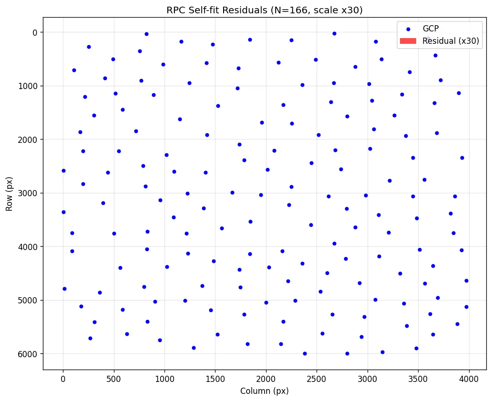
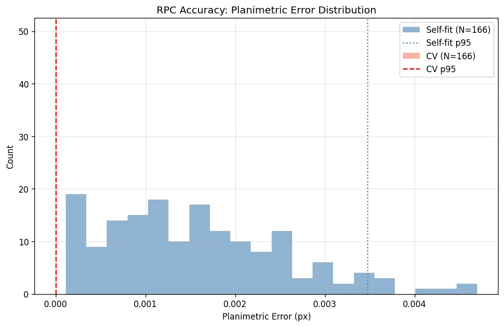
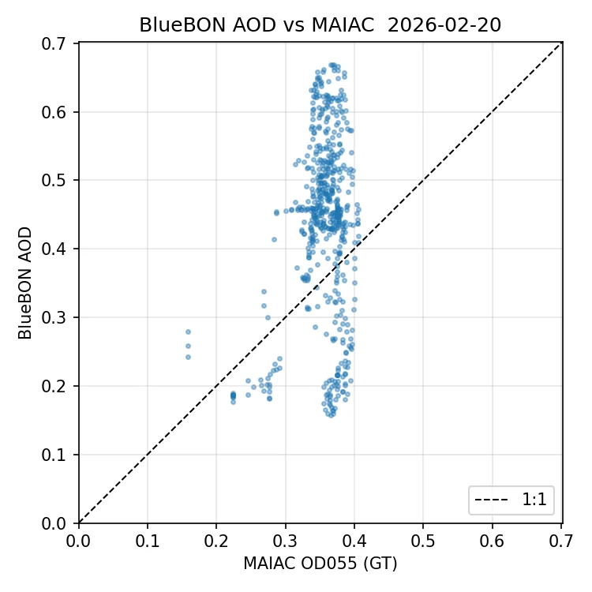
배운 점 · 한계What I learned · Limitations
- 센서를 직접 상대하면 '영상'이라는 말이 무엇으로 이루어져 있는지가 보임. DN 은 숫자일 뿐이고, 물리량이 되려면 암전류·PRNU·태양 기하·분광응답이 전부 들어가야 함.
- 대리보정은 비교 기준을 맞추는 게 절반임. 지상 분광을 위성 SRF 로 적분하지 않고 대조하면 밴드폭 차이만큼 틀림.
- 표본이 작을 때 어떤 상관계수를 믿을지가 결론을 바꾼다 — Kendall τ 를 쓴 이유를 설명할 수 있어야 함.
- '유의한 차이가 없다'도 결론임. 포인팅 이상치의 원인을 찾지 못했다는 사실을 그대로 보고에 남겼음.
- 한계: PRNU 보정 알고리즘 최적화는 추가 연구 여지가 남아 있음. MTF 디블러링도 커널 추정 정확도에 결과가 크게 좌우됨.
- Working on the sensor shows you what an 'image' is actually made of. DN is just a number; turning it into a physical quantity takes dark current, PRNU, solar geometry and spectral response, all of it.
- Half of vicarious calibration is making the comparison fair. Compare ground spectra without integrating them through the satellite's SRF and you are off by the bandwidth difference.
- With a small sample, which correlation statistic you trust changes the conclusion — you should be able to say why you chose Kendall's τ.
- 'No significant difference' is also a result. I recorded the failure to explain the pointing outliers rather than leaving it out.
- Limitations: the PRNU correction still has room for optimisation, and MTF deblurring depends heavily on how well the kernel is estimated.
관련 코드Code
저장소는 센서 → 위성 → 기법 순으로 정리돼 있고, 각 폴더에 입력·출력 표가 있음.The repository is organised by sensor, satellite and technique; each folder documents its inputs and outputs.
산출물Deliverables
- L0→L1A 전처리 파이프라인
- 복사보정·대리보정 코드와 검보정장 분석
- 기하보정 V3 (정합·RPC·웹 UI)
- MTF 측정·디블러링
- 포인팅 오차 분석 보고서
- 응용: AOD · 연무제거 · 해색 · 초해상화
- L0 to L1A preprocessing pipeline
- Radiometric and vicarious calibration with cal/val site analysis
- Geometric correction V3 with matching, RPC and web UI
- MTF measurement and deblurring
- Pointing error analysis report
- Downstream: AOD, dehazing, ocean colour, super-resolution
원본 보고서와 발표자료는 사내 자료로 공개하지 않음. 분석 코드는 GitHub에 정리되어 있음.Source reports and decks are internal and not published here. Analysis code is organised on GitHub.